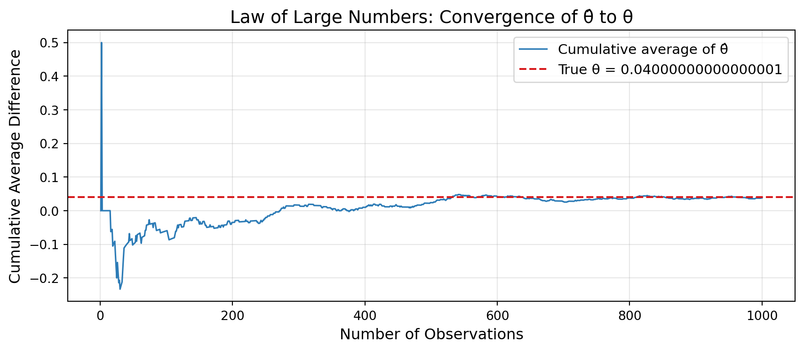
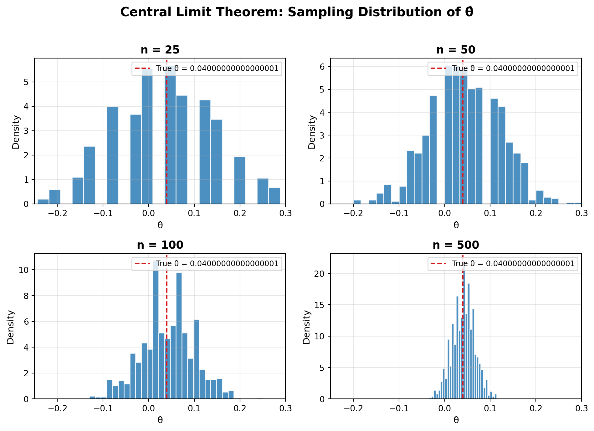

Simulating Key Ideas from Classical Frequentist Statistics
Author
Ziyao
Published
April 28, 2026
Introduction
Imagine you run a website with a landing page that invites visitors to subscribe to your newsletter. The page features a prominent “call to action” (CTA) — a short phrase designed to encourage sign-ups. You have been using the CTA “Sign up for our newsletter here!” (let’s call this CTA A), but a colleague suggests that “Stay up to date by signing up!” (CTA B) might perform better.
Which one actually leads to more sign-ups? Gut feelings and opinions won’t settle this — we need data. The standard approach is to run an A/B test: randomly assign each visitor to see one of the two CTAs, then compare the sign-up rates between the two groups. Because visitors are randomly assigned, any difference in sign-up rates can be attributed to the CTA itself rather than to differences in the visitors.
In this post, we will walk through the statistical foundations behind A/B testing by simulating an experiment from scratch. Along the way, we will explore the Law of Large Numbers, bootstrapping, the Central Limit Theorem, hypothesis testing, the connection between t-tests and regression, and the dangers of peeking at results too early.
The A/B Test as a Statistical Problem
Let’s formalize this experiment. Each visitor who lands on our page either signs up (which we code as 1) or does not sign up (coded as 0). This binary outcome can be modeled as a draw from a Bernoulli distribution with parameter \(\pi\), the probability of signing up.
Because the CTA a visitor sees may influence their behavior, we allow the sign-up probability to differ across groups:
Visitors who see CTA A sign up with probability \(\pi_A\).
Visitors who see CTA B sign up with probability \(\pi_B\).
The quantity we care about is the difference in sign-up rates:
\[
\theta = \pi_A - \pi_B
\]
If \(\theta > 0\), CTA A is better; if \(\theta < 0\), CTA B is better; and if \(\theta = 0\), they perform equally well.
We estimate \(\theta\) with the difference in sample proportions:
\[
\hat\theta = \bar{X}_A - \bar{X}_B
\]
Since each observation is either 0 or 1, the sample mean of each group is simply the proportion of visitors who signed up — so \(\bar{X}_A = \hat\pi_A\) and \(\bar{X}_B = \hat\pi_B\).
Simulating Data
In the real world, we would not know the true values of \(\pi_A\) and \(\pi_B\) — that is precisely what we are trying to learn from the experiment. But for the purpose of this exercise, we will set these values ourselves so that we can study the behavior of our estimator when the ground truth is known.
Let’s suppose \(\pi_A = 0.22\) and \(\pi_B = 0.18\), so the true difference is \(\theta = 0.04\). We simulate 1,000 visitors in each group:
import numpy as npimport matplotlib.pyplot as pltimport pandas as pdnp.random.seed(42)pi_A =0.22pi_B =0.18theta_true = pi_A - pi_B # 0.04n =1000# Simulate 1,000 draws from each groupcta_a = np.random.binomial(1, pi_A, size=n)cta_b = np.random.binomial(1, pi_B, size=n)print(f"CTA A sample proportion: {cta_a.mean():.4f}")print(f"CTA B sample proportion: {cta_b.mean():.4f}")print(f"Observed difference (θ̂): {cta_a.mean() - cta_b.mean():.4f}")
CTA A sample proportion: 0.2160
CTA B sample proportion: 0.1780
Observed difference (θ̂): 0.0380
We now have our simulated data: 1,000 binary outcomes for each CTA group. Let’s use these to explore some fundamental statistical concepts.
The Law of Large Numbers
The Law of Large Numbers (LLN) tells us that as the sample size grows, the sample mean converges to the population mean. Applied to our setting, this means that \(\hat\theta = \bar{X}_A - \bar{X}_B\) will get closer and closer to the true \(\theta\) as we observe more visitors. The LLN is what gives us confidence that our estimator is reliable — provided we collect enough data.
To see this in action, let’s compute the element-wise differences between each pair of CTA A and CTA B draws, then plot the running average as we accumulate observations:
diffs = cta_a - cta_bcumulative_avg = np.cumsum(diffs) / np.arange(1, n +1)fig, ax = plt.subplots(figsize=(9, 4))ax.plot(range(1, n +1), cumulative_avg, color="#2c7bb6", linewidth=1.2, label="Cumulative average of θ̂")ax.axhline(y=theta_true, color="#d7191c", linestyle="--", linewidth=1.5, label=f"True θ = {theta_true}")ax.set_xlabel("Number of Observations", fontsize=12)ax.set_ylabel("Cumulative Average Difference", fontsize=12)ax.set_title("Law of Large Numbers: Convergence of θ̂ to θ", fontsize=14)ax.legend(fontsize=11)ax.grid(True, alpha=0.3)plt.tight_layout()plt.show()

The plot illustrates the LLN beautifully. With only a handful of observations, the running average bounces around wildly — sometimes even suggesting the wrong sign. But as the sample size grows into the hundreds, the cumulative average settles down and hovers close to the true value of \(\theta = 0.04\). This is exactly the convergence the LLN guarantees: with enough data, our estimate becomes reliable.
Bootstrap Standard Errors
Now that we trust our estimator, a natural follow-up question is: how precise is it? A point estimate of \(\hat\theta\) alone does not tell us much — we also need a measure of uncertainty. This is where the bootstrap comes in.
The bootstrap is a resampling method that lets us estimate the variability of a statistic without relying on a closed-form formula. The idea is simple: we treat our observed data as if it were the population, draw many resamples (with replacement) from it, compute the statistic of interest on each resample, and use the standard deviation of those resampled statistics as our estimate of the standard error.
n_boot =1000boot_theta = np.zeros(n_boot)for i inrange(n_boot): boot_a = np.random.choice(cta_a, size=n, replace=True) boot_b = np.random.choice(cta_b, size=n, replace=True) boot_theta[i] = boot_a.mean() - boot_b.mean()boot_se = boot_theta.std()# Analytical standard errorpi_hat_a = cta_a.mean()pi_hat_b = cta_b.mean()analytical_se = np.sqrt(pi_hat_a * (1- pi_hat_a) / n + pi_hat_b * (1- pi_hat_b) / n)print(f"Bootstrap standard error: {boot_se:.4f}")print(f"Analytical standard error: {analytical_se:.4f}")
Bootstrap standard error: 0.0177
Analytical standard error: 0.0178
The bootstrap and analytical standard errors are very close, which confirms that the bootstrap is working as expected. Now let’s use the bootstrap standard error to construct a 95% confidence interval for \(\theta\):
Point estimate θ̂: 0.0380
95% Confidence interval: [0.0034, 0.0726]
This confidence interval tells us that, based on our data, we are 95% confident that the true difference in sign-up rates between CTA A and CTA B falls within this range. If the interval does not contain zero, that is initial evidence that there is a real difference between the two CTAs.
The Central Limit Theorem
The Central Limit Theorem (CLT) is one of the most important results in statistics. It states that regardless of the shape of the underlying population distribution, the sampling distribution of the sample mean — and therefore of the difference in sample means — becomes approximately Normal as the sample size grows. This is remarkable because our data are Bernoulli (just 0s and 1s), yet the distribution of \(\hat\theta\) looks increasingly like a bell curve.
Let’s demonstrate this by simulating 1,000 experiments at four different sample sizes:

The progression across these four panels is striking. At \(n = 25\), the histogram looks jagged and irregular — far from a smooth bell curve. By \(n = 50\) and \(n = 100\), the shape is already becoming smoother and more symmetric. At \(n = 500\), the distribution is tightly concentrated around the true \(\theta = 0.04\) and closely resembles a Normal distribution. This is the CLT in action: even though our underlying data are binary, the sampling distribution of \(\hat\theta\) becomes approximately Normal as the sample size increases.
Hypothesis Testing
Now that we have seen the CLT in action, we can leverage the approximate Normality of \(\hat\theta\) to perform a formal hypothesis test. In hypothesis testing, we start with a null hypothesis\(H_0: \theta = 0\) — the assumption that the two CTAs produce the same sign-up rate — and an alternative hypothesis\(H_1: \theta \neq 0\). The goal is to determine whether the data provide enough evidence to reject \(H_0\).
To do this, we standardize our estimate to form a test statistic:
\[
z = \frac{\hat\theta - 0}{SE(\hat\theta)}
\]
Why do we standardize? The logic proceeds in three steps:
By the CLT, we know that \(\hat\theta\) is approximately Normal for large samples. Under \(H_0\), the mean of that distribution is 0.
When we divide a Normal random variable by its standard deviation, we get a standard Normal \(N(0,1)\). So under \(H_0\), \(z \;\dot\sim\; N(0,1)\).
This means we know the distribution of our test statistic under the null, which is exactly what we need to compute a p-value — the probability of observing a test statistic at least as extreme as ours, assuming \(H_0\) is true.
A note on terminology: this procedure is sometimes called a “t-test,” even though our test statistic follows an approximate Normal distribution rather than a t-distribution. The classical t-test arises when data are drawn from a Normal distribution and the variance must be estimated — the ratio then follows an exact t-distribution. In our setting, the data are Bernoulli, so there is no exact t-distribution result. The CLT gives us approximate Normality, and since we estimate the SE from the data, what we are really doing is closer to a z-test. For large samples, the t-distribution and the standard Normal are nearly identical, so the practical difference is negligible — but it is important to understand the distinction.
At the α = 0.05 level, we reject H₀. There is statistically significant evidence that the two CTAs produce different sign-up rates.
The T-Test as a Regression
It turns out that the two-sample test we just performed is mathematically equivalent to a simple linear regression. This connection is more than a curiosity — it means the same software and framework you use for regression can also perform hypothesis tests, and it generalizes naturally to more complex experimental designs with additional controls or treatment arms.
Here is the setup. We stack the CTA A and CTA B data into a single dataset with two columns:
\(Y_i\): the outcome (1 if signed up, 0 otherwise)
\(D_i\): a group indicator (1 if the visitor saw CTA A, 0 if CTA B)
Then we fit the regression:
\[
Y_i = \beta_0 + \beta_1 D_i + \varepsilon_i
\]
The interpretation of the coefficients is straightforward:
\(\beta_0\) is the expected value of \(Y_i\) when \(D_i = 0\), i.e., the mean of the CTA B group, which estimates \(\pi_B\).
\(\beta_0 + \beta_1\) is the expected value of \(Y_i\) when \(D_i = 1\), i.e., the mean of the CTA A group, which estimates \(\pi_A\).
Therefore, \(\beta_1 = \pi_A - \pi_B = \theta\), and the OLS estimate \(\hat\beta_1\) is numerically identical to \(\hat\theta\).
Comparison:
Two-sample θ̂ = 0.0380
Regression β̂₁ = 0.0380
Two-sample SE = 0.0178
Regression SE = 0.0178
As expected, the regression estimate \(\hat\beta_1\) matches our earlier two-sample estimate \(\hat\theta\). The standard errors may differ slightly because standard OLS assumes a single pooled variance while our two-sample formula allows separate variances for each group — but the values are very close.
This equivalence matters because the regression framework is far more flexible. If we later wanted to control for visitor characteristics (e.g., device type, time of day) or test more than two CTAs, we could simply add more variables to the regression. The two-sample t-test is just the simplest special case.
The Problem with Peeking
Your boss is impatient. Rather than waiting until all 1,000 visitors have been assigned to each group, she wants to peek at the results after every 100 visitors per group — checking at \(n = 100, 200, 300, \ldots, 1000\) — and declare a winner as soon as any test comes back significant at \(\alpha = 0.05\).
This sounds reasonable, but it is actually a serious problem. A single test at \(\alpha = 0.05\) has a 5% chance of producing a false positive (rejecting \(H_0\) when it is true). But when you conduct multiple tests on accumulating data, each peek is another opportunity for a false positive. The overall probability of at least one false rejection across all the peeks is much higher than 5%.
Let’s demonstrate this with a simulation. We set up a world where the null hypothesis is true — \(\pi_A = \pi_B = 0.20\) — and run 10,000 experiments, peeking 10 times in each:
Peeking inflated the false positive rate from 5% to approximately 19.9%.
That is roughly 4.0x higher than the nominal rate.
The result is stark: by peeking 10 times instead of testing once, the false positive rate roughly triples. This means that if there is truly no difference between the CTAs, you would still incorrectly declare a winner about {empirical_fpr*100:.0f}% of the time — far more often than the 5% you intended.
This is a critical lesson for anyone running A/B tests in practice. Repeated peeking without correction invalidates the guarantees of classical hypothesis testing. If you need to monitor results as data accumulate, you should use methods specifically designed for sequential testing — such as group sequential designs or always-valid confidence intervals — which control the overall false positive rate even with multiple looks at the data.